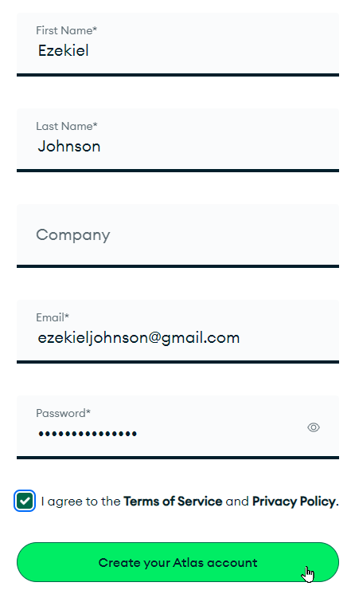
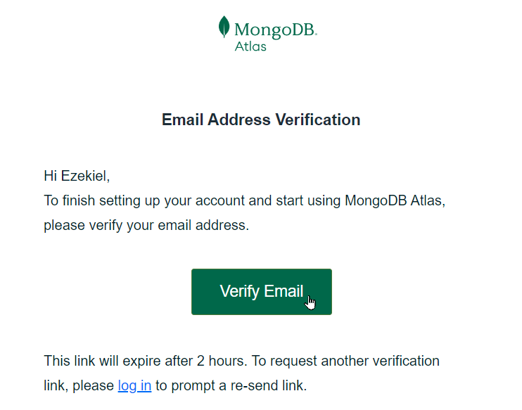
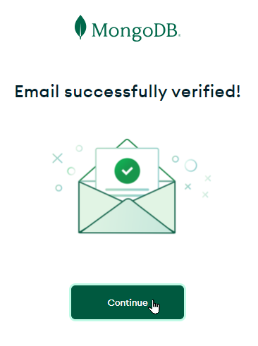
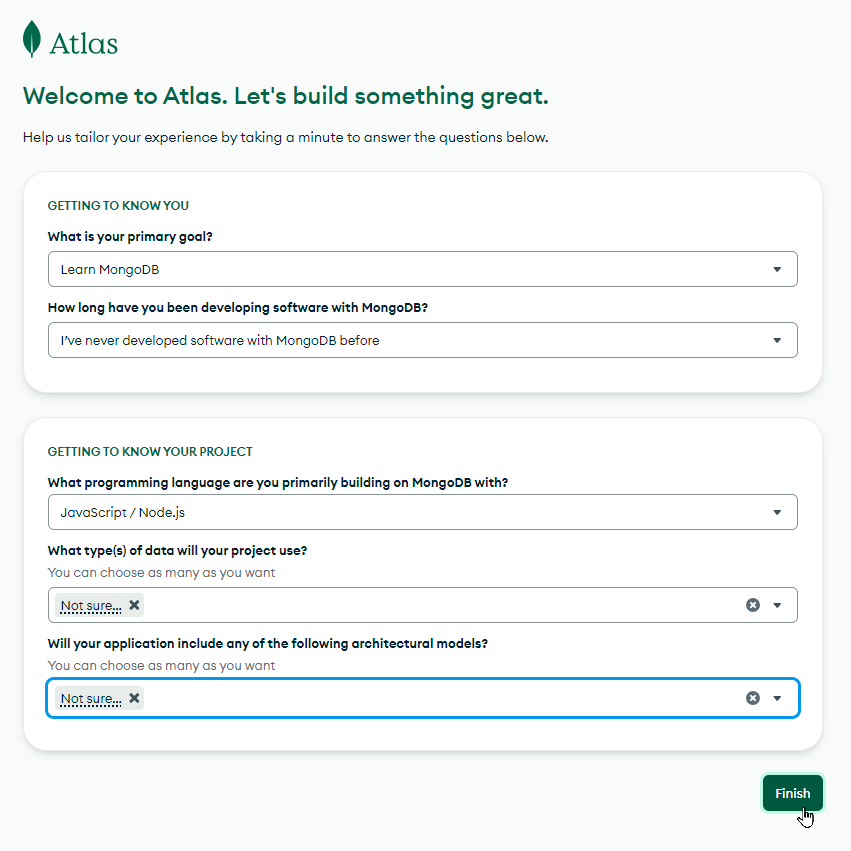

MongoDB Atlas: Account Registration
MongoDB Atlas is a great way to get started with MongoDB. You can create and deploy a database in the cloud for free, and you can do it pretty quickly too. The first step is to create an Atlas account. Follow these steps:
- Click here to go to the Account Registration page
- Enter a first name, last name, email address, and password
- Make sure to remember your email address and password!!!!
- Click the "I agree to the Terms of Service and Privacy Policy" checkbox
Click the "Create your Atlas account" button

Check your email inbox for a verification email from MongoDB Cloud
When the email arrives, click the "Verify Email" button

On the page that appears, click the "Continue" button

On the next page, fill out the form as desired, and click "Finish"

From there, you may be redirected to another page - but don't worry about any of that yet! As long as your account has been created, you should be all set.
Just make sure to remember your email address and password!